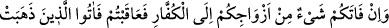

“Allah’ın hükmü budur.” Yâni bu âyette zikredilen, uyulması için Allah’ın verdiği
hükümlerden bir hükümdür.
“Aranızda O, hükmeder.” Bu cümle, öncekini pekiştiren ve onunla amel edilmesini
teşvik eden müstakil bir cümledir.
Fethü’r-Rahman adlı eserde şöyle denilmiştir: Daha sonra bu hüküm neshedilmiştir.
Yalnız “Bunlar onlara helâl değildir. Onlar da bunlara helâl olmazlar” hükmü hâriç.
Yâni müslüman kadınların kâfirlere, kâfirlerin de müslüman kadınlara helâl olmadığını
bildiren hüküm neshedilmemiştir.
“Allah bilendir, hikmet sâhibidir.” Sizin için iyi ve uygun olanı O, hakkıyla bilir,
sonsuz hikmetin gerektirdiği hükümleri verir.
İbnü’l- Arabî, “Allah Teâlâ’nın bu âyet-i kerîmedeki hükmü bu zamana, bu olaya
mahsustur” demiştir.
Zühri de şöyle demiştir: Şâyet Hudeybiye günü Rasûlullah (a.s.) ile Kureyş arasında
yapılan barış anlaşması olmasaydı, Medine’ye gelen kadınları tutar ve mehri geri
vermezdi. Nitekim bu anlaşmadan önce müslüman olup gelen kadınlara böyle
yapılıyordu.
Rivâyet edildiğine göre, bu âyet-i kerîme nâzil olunca, mü’minler, hicret edip gelen
kadınların müşrik kocalarına, emredildikleri mehirleri geri ödediler. Ama müşrikler,
kendilerine giden kâfir kadınların, mehirlerinden müslüman olan kocalarına hiç bir şey
ödemediler. Biz yanımızda size âid olan hiçbir şey olduğunu bilmiyoruz, bizim sizde bir
şeyimiz varsa verin, dediler. Bunun üzerine şu âyet-i kerîme nâzil oldu:
11. Eğer eşlerinizden biri, sizi bırakıp kâfirlere kaçar, siz de (onlarla savaşıp)
galip gelirseniz, eşleri gitmiş olanlara (ganîmetten), harcadıkları kadar verin.
İnandığınız Allah’a karşı gelmekten sakının.
“Eğer eşlerinizden biri, sizi bırakıp kâfirlere kaçar, siz de (onlarla savaşıp) galip
gelirseniz,” Fevt, bir şeyin, yetişilemeyecek şekilde insandan uzaklaşmasıdır. Geçme
anlamında olduğu için ilâ harfiyle müteaddi olmuştur. Yâni eşlerinizden biri, hiç
düşünmeden, tereddüdsüzce çıkıp sizden kaçar ve kâfirlere; onların memleketine
giderse, demektir. Âyet-i kerîmede “biri” anlamındaki ahad yerine şey’ün kelimesi
kullanıldı. Bu, kaçan kadının durumunu tahkir, basitleştirmek ve kelimenin kapsamını
(umûmiliğini) genişletmek içindir. Çünkü, şartı takiben gelen nekre kelimeler umûmilik
ifâde eder. Şey kelimesi, biri anlamındaki ahad kelimesinden, kadınların bütün
sınıflarını kuşatmak bakımından daha genel mânâdadır. Yâni kaçıp giden kadın hangi
kadınlardan olursa olsun; ister arap, ister acem ister hürre ve ister câriye olsun... Veya